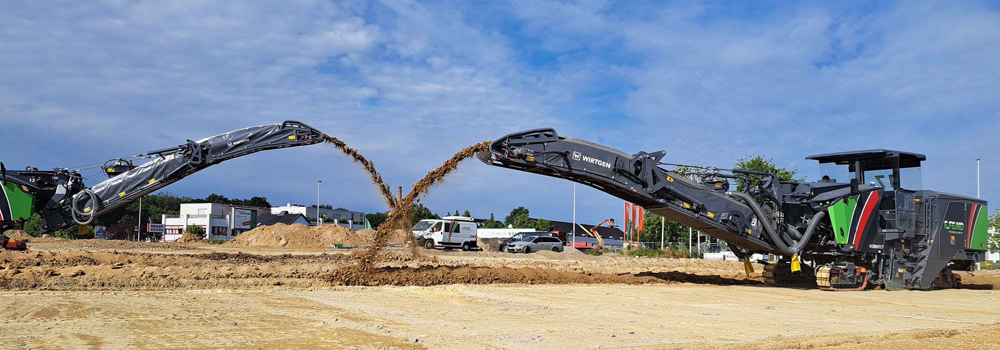

InfraTech 2027 · Stand 5.209
Pflasterschleifen live in Rotterdam
Auf Stand 5.209 zeigen wir die Schleifwalze für Kopfsteinpflaster neben einer Testfläche aus geschliffenen und ungeschliffenen Steinen.
InfraTech 2027
Die Schleifwalze auf Stand 5.209
- 12.–15. Januar 2027
- Rotterdam Ahoy · Halle 5
- Stand 5.209
Verfahren
In drei Schritten
Aufnahme vor Ort
Fläche, Steinart und Fugenbild werden vor Ort aufgenommen.
Schleifen
Die Schleifwalze trägt die Steinköpfe plan ab. Die Steine bleiben im Verbund.
Ergebnis
Die Fugen bleiben offen, es wird keine Fläche versiegelt.
Vorher / Nachher
Gleiche Steine, neue Oberfläche
Mit der Zeit setzen sich Pflastersteine unterschiedlich, Kanten stehen über. Beim Pflasterschleifen tragen wir nur die überstehenden Steinköpfe ab, bis alle Steine auf einer Ebene liegen. Verband, Fugen und Material bleiben erhalten. Am Stand gehen Sie selbst über beide Flächen.
Schematische Darstellung, nicht maßstäblich.
Legende als Tabelle
| Element | Im Bild | Bedeutung |
|---|---|---|
| Pflasterstein | dunkle Fläche | bleibt liegen |
| Bettung | helle Fläche mit Kontur | wird nicht berührt |
| Abtrag | grün gestrichelt | nur der überstehende Teil |
| Stolperkante | grüne Klammer, links | Höhenversatz zwischen zwei Steinen |
Auszeichnung
Deutscher Nachhaltigkeitspreis 2027
Das Verfahren wurde in der Kategorie Produkte ausgezeichnet. Die Jury würdigte den Beitrag zu Barrierefreiheit, Ressourcenschonung und zum Erhalt bestehender Infrastruktur.
[Jury-Zitat im Originalwortlaut einsetzen]
Jury des Deutschen Nachhaltigkeitspreises, Kategorie Produkte
Termin am Stand
Wann möchten Sie uns treffen?
Wählen Sie Tag, Tageszeit und Thema. Daraus entsteht eine fertige E-Mail an unser Messeteam, die Sie senden oder kopieren.
- An
- Betreff
Öffnet sich kein Mailprogramm, kopieren Sie den Text und senden Sie ihn an die oben genannte Adresse. Datenschutzerklärung